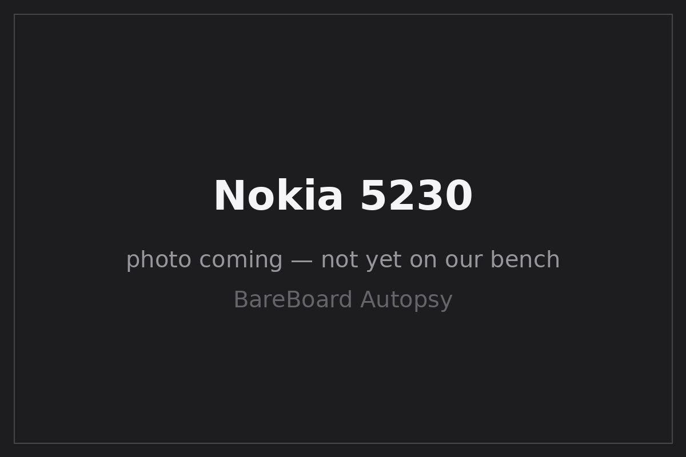

BareBoard Autopsy Report · Mobile Phones
Nokia 5230 Confirmed
Nokia's budget Symbian touchscreen — announced August 2009 Eye on Mobility — running Symbian OS 9.4 (S60 5th Edition) on a 434 MHz ARM11 with 128 MB of RAM GSMArena. FCC ID: LJPRM-594, granted to Nokia Corporation on October 14, 2009 for the U.S. RM-594 Confirmed. We have never owned, opened, booted, probed, tested, or disassembled a Nokia 5230.

What is this thing?
The Nokia 5230 (marketed in the U.S. as the Nokia 5230 Nuron on T-Mobile) is a 3G Symbian smartphone: a 3.2-inch 360×640 resistive touchscreen, 434 MHz ARM11 processor, 128 MB of RAM, microSDHC expansion, GPS/A-GPS, Bluetooth, and FM radio — with no Wi-Fi GSMArena GSMArena review. It shipped in several regional variants — RM-588, RM-593, RM-594, RM-629 — and this report's FCC evidence covers the U.S. RM-594 specifically Confirmed PhoneArena.
Timeline
- 2009-08-25 — Nokia announces the 5230 touchscreen phone Eye on Mobility.
- 2009-10-14 — FCC grants LJPRM-594 to Nokia Corporation for the RM-594 Confirmed.
- 2009-11 — 5230 released GSMArena.
- 2010 — U.S. Nuron variant (RM-594) sold via T-Mobile PhoneArena.
- 2026-09-27 — This report published from public records; no unit on our bench.
Outside
B Call / end / menu hardware keys below the display
C 2 MP rear camera (no flash) GSMArena
D microSDHC slot (hot-swappable, under side cover)
E Removable rear cover; BL-5J 1320 mAh battery GSMArena
111 × 51.7 × 15.5 mm, 115 g GSMArena.
Board
No public teardown with die-level component identities for the 5230's board has been located. What public records establish: a 434 MHz ARM11-class applications processor (ARM1136JF-S class per contemporary reporting — but no verified package or Nokia ASIC name, so the package remains Unknown), 128 MB of RAM, and 3G/GPS radios GSMArena GSMArena review. We do not invent a baseband part number, PMIC identity, or RF front-end bill of materials.
Chips
| Ref | Marking / identity | Role | Confidence | Dig deeper |
|---|---|---|---|---|
| SoC | 434 MHz ARM11-class (ARM1136JF-S class); package / Nokia ASIC name unknown | Applications/baseband processor | Unknown | GSMArena specs — class reported, package unverified; no part number asserted, no datasheet claimed |
| RAM | 128 MB | Working memory | Likely | GSMArena specs; packaging unknown — no public datasheet claimed |
| Radios | 3G (HSDPA), GPS/A-GPS, Bluetooth 2.0, FM radio; no Wi-Fi | Connectivity | Likely | GSMArena specs — silicon identities await the bench |
| Storage | 70 MB internal + microSDHC (up to 16 GB) | User storage | Likely | GSMArena specs |
FCC
FCC ID LJPRM-594 — granted to Nokia Corporation on October 14, 2009 Confirmed. The grant covers the RM-594, the U.S. variant (sold as the Nuron) Confirmed PhoneArena. Scope discipline: the 5230 shipped as RM-588, RM-593, RM-594, and RM-629 regionally; this filing names the RM-594, and we do not extend its test data to the other variants.
Debug / service modes
Symbian-era Nokias expose service and flashing interfaces through Nokia's documented service tooling at a high level. We describe this only as a documented service path. We have never connected to a 5230's service interface, we publish no pinout, no procedure, and no instructions for defeating any lock or protection. We listen; we don't knock.
Public findings & what we didn't do
- ✅ Cited the primary FCC grant (LJPRM-594, 2009-10-14) scoped to the RM-594 PhoneArena.
- ✅ Distinguished the RM-594 from the RM-588/RM-593/RM-629 regional variants.
- ✅ Left the SoC package as Unknown rather than inventing a Nokia ASIC name.
- ❌ We have not opened, booted, probed, or photographed a Nokia 5230 ourselves.
- ❌ We have no verified board-level component identities — no teardown located.
- ❌ We have not tested any service interface or captured any boot log.
By the numbers
| Metric | Value | Source |
|---|---|---|
| Display | 3.2″ 360×640 resistive touchscreen | GSMArena |
| OS | Symbian OS 9.4, S60 5th Edition | Wikipedia |
| CPU / RAM | 434 MHz ARM11 class; 128 MB RAM | Likely GSMArena |
| Camera | 2 MP rear | GSMArena |
| Battery | BL-5J, 1320 mAh (removable) | GSMArena |
| Weight / size | 115 g; 111 × 51.7 × 15.5 mm | GSMArena |
| FCC ID | LJPRM-594 (RM-594) | Confirmed |
Glossary
| S60 5th Edition | Symbian's touch-enabled UI platform (Symbian OS 9.4). |
| ARM1136JF-S | ARM11-family CPU core class reported for this device; package unverified. |
| Nuron | U.S. marketing name for the RM-594 5230 on T-Mobile. |
| RM-588 / 593 / 594 / 629 | Regional hardware variants of the 5230. |
Sources & confidence
- GSMArena — Nokia 5230 specs (secondary).
- GSMArena — Nokia 5230 review (secondary).
- PhoneArena — Nokia 5230 US (RM-594) (secondary).
- Nokia 5230 — Wikipedia (secondary).
- Eye on Mobility — 5230 announcement (2009-08-25) (secondary).
| Claim | Confidence | Basis |
|---|---|---|
| FCC ID LJPRM-594; Nokia Corporation; 2009-10-14; covers RM-594 | Confirmed | FCC grant (primary evidence) |
| Symbian 9.4/S60 5th, 3.2″ 360×640, 434 MHz ARM11 class, 128 MB, no Wi-Fi | Likely | Corroborated secondary records |
| SoC package / Nokia ASIC name | Unknown | No verified evidence — not asserted |
| Board-level component identities | Unknown | No teardown located — awaits the bench |
Legal note
This report is a transformative educational summary of publicly available records. Product names and marks belong to their owners. We describe only publicly documented service interfaces at a high level; we publish no lock-bypass, authentication-defeat, firmware-extraction, or unsafe service procedures. Our posture: we listen, we don't knock.
Related reports
- Nokia 1200 — the 2007 ultrabasic
- Nokia 1110 / 1110i — the mid-2000s DCT4 entry phone
- Nokia 1100 — the best-selling classic